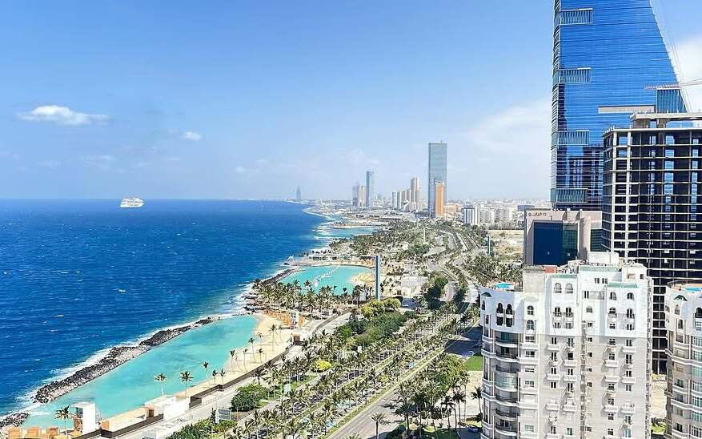

Tourism in Saudi Arabia

AlUla
Known for its stunning rock formations and ancient Nabatean tombs, AlUla is a must-visit heritage site.

Riyadh
The capital city blends tradition with modern vision, showcasing Saudi Arabia’s rapid development.

Jeddah
A coastal gem on the Red Sea, known for its vibrant art scene, historic Al-Balad, and beautiful corniche.